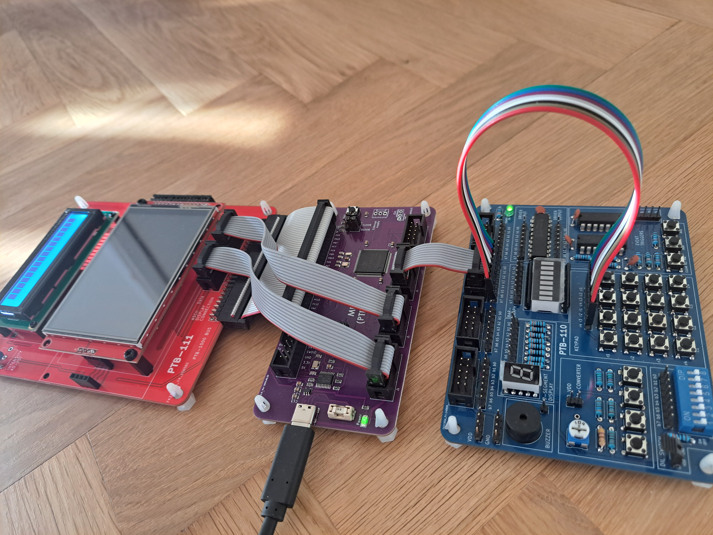
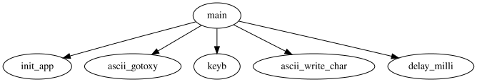
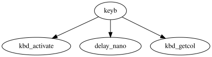
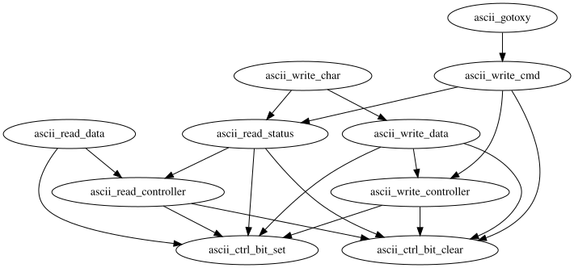

In this lab assignment, you will get to run and debug a C program on real hardware.
You must have done and submitted the preparatory assignment for this lab. If you have not, you will probably not be able to finish this lab assignment on time, so consult a TA and book a time slot in a later lab session.
The lab environment is the same as in the previous lab (MD307 + VSCode), with the addition of some peripheral devices:
This lab assignment will primarily deal with the keypad and the ASCII display. The DIL switch will be used for debugging purposes.
Create a new project folder and initialize a project with the Lab2 template (Ctrl+Shift+P → MDx07: Initialize project → Lab Assignments → Lab2).
Connect the keypad to Port D 15..8. Connect the PTB-111 to the MD307 via the PTB-1000 bus. Connect the ASCII display to Port E (Data to 15..8, Control to 7..0).
Finally, connect the MD307 to your computer via USB. In the end it should look something like this:

The expected behaviour of the program is for it to print characters
from left to right on the top row of the ASCII display when you press
keys on the keypad. When the end of the row is reached, it should start
over from the beginning of the row and overwrite existing characters.
The grid below shows the characters to be printed when pressing the
corresponding keys on the keypad (e.g. top-left key should print
1, bottom-right key should print D).
|---|---|---|---|
| 1 | 2 | 3 | A |
|---|---|---|---|
| 4 | 5 | 6 | B |
|---|---|---|---|
| 7 | 8 | 9 | C |
|---|---|---|---|
| E | 0 | F | D |
|---|---|---|---|Time to run the program. Go to the Run and Debug view (Ctrl+Shift+D), select Build and debug (hardware) in the drop-down list, and press Start Debugging (F5).
When the debugger has automatically stopped in the beginning of
main, press Continue (F5) and test if
the program behaves as expected.
Rats! It doesn’t work!
Luckily, you love fixing broken software.
In this lab, like the previous, you will first debug an existing program, and then try your own if you have time left. Only the first part is necessary to pass the lab.
The program is riddled with bugs. Given your familiarity with similar code from the preparatory assignment, it might be possible to simply read the code from beginning to end and fix all the bugs without ever running it, but don’t do that. The point is for you to learn how to debug a program in a structured way. As you may have already noticed, debugging (fixing bugs) is usually a much more time-consuming part of software development than actually writing the code. This problem should not be approached by trying to learn how to write perfect code from the outset - that is unattainable. Instead, one should learn how to find bugs efficiently - once the bug is pinpointed, the solution is usually obvious.
Warning: When debugging code (especially code written by someone other than yourself), correcting inconsequential things (like the way the code is formatted) can be tempting, but refrain from doing so! When debugging, it is useful to check exactly what changes have been made to the source code (the TAs may want to do so if you run into problems), and having a bunch of irrelevant changes makes it more difficult.
Let’s look at the program from a top-down perspective starting from
main, just one level deep into the calling hierarchy:

We start off with initializations. If the GPIO ports are configured incorrectly, testing the program is going to be difficult. So let’s start there.
NB: You may assume the definitions in the GPIO
header file gpio.h, which includes the port macros, are
correct. You do not need to check those.
Starting with the keypad (connected to Port D 15..8), recall that the upper four pins (15..12) should be configured as digital output (open drain, 2 MHz), and the lower four pins (11..8) as digital input (pull up).
Consult the QuickGuide and carefully derive what values should be written to what registers for this configuration to work.
Look at the code in init_keypad and see if you can spot
the bugs. If so, modify the code and make a note of your corrections. If
not, consult a TA.
Before moving on: You need to be really confident in your ocular inspection. The upcoming tasks rely on correctly configured GPIO pins - if you’ve made a mistake, you might end up wasting precious time. You may ask a TA to verify that your new configuration is correct, if you wish.
To save time, you needn’t bother checking init_ascii -
it is correctly implemented.
Now that you’ve modified the code you should recompile the project, run the program and check whether it works as intended.
What’s that? The program still doesn’t work? How unfortunate!
The delay functions are used in most parts of the program, so let’s check those next.
Have a look in the file systick.c. It appears
delay_milli, delay_micro and
delay_nano are all essentially carbon copies of one
another, where the only difference is the initial calculation of the
count variable.
If the delay functions were defined in terms of one another in some reasonable way, testing one of them would have been enough to verify the correctness of all of them. However, that is not the case, so we are forced to test all of them separately. Let’s not bother with the mathematics of the initial calculation; instead, we’ll just devise a simple test (we would have to do that anyway) and deal with the headache if the test fails.
We can use the debugger to step over a delay function and measure the
time it takes to complete. Add the code below to the beginning of
main.
#define MS 0 // Change the number to something reasonable!
delay_milli(MS);
delay_micro(1000 * MS);
delay_nano(1000 * 1000 * MS);Try to think of a reasonable target for the test, and change the
definition of MS accordingly. Keep in mind you will have to
measure it manually, using a stopwatch on your phone or something
similar. If the target is too short, your reaction time (noticing the
debugger stopped and actually stopping the stopwatch) will be too
significant and render the test useless. If the target is too long, you
might get too bored to actually finish the test.
For each of the delay functions, use the debugger to Step Over (F10) and record the time it takes to complete the step.
Were the delays reasonably accurate? If any of the delays deviated too much, fix the calculation and test it again to verify correctness.
Make a note of your corrections, if any. Remove the test code and check if the program works now.
Gah! Still broken.
The code of the ASCII display is fairly complex, and depends on the input from the keypad. If we’re lucky, we only need to fix the keypad code. Onward!
Looking again at the calling hierarchy from before, we notice that
the only keypad-related call made in main is to
keyb.
Put a breakpoint at the call to keyb, start the program
and Continue (F5) to get to the breakpoint. Press
and hold one of the buttons on the keypad, and
Continue (F5). Check the return value. Is it what
you expected? Keep trying different inputs until you have found an input
that yields an incorrect return value.
To get a better picture of the situation, let’s look at the calling
hierarchy below, starting from keyb.

Luckily it’s not very complex. You can ignore the call to
delay_nano - it needs to be there to give enough time for
the row activation to take effect. That leaves us with
kbd_activate and kbd_getcol.
Use the debugger to Step Into (F11)
keyb. Put breakpoints on the return statements. Press and
hold a button that earlier yielded an incorrect return value, and
Continue (F5). Do the values of the row and
col variables meet your expectations? The answer should give
you a clue whether the bug lies within kbd_activate or
kbd_getcol.
Dig deeper into the calling hierarchy based on your findings. Carefully step through the function and correct any bugs you come across. If you get stuck, ask a TA for help.
After any corrections, go back to testing keyb and
verify that it returns the values you expect.
Make a note of your corrections, cross your fingers, and check if the program works.
No… no, no, no!
Yes. You know what that means. We finally get the pleasure of debugging the ASCII display code.
Yet again looking at the calling hierarchy from main, we
see two calls related to the ASCII display, namely
ascii_gotoxy and ascii_write_char. Let’s have
a look at their calling hierarchies (excluding delay functions, since
you’ve already fixed those) below.

This one is a bit more complex, but still manageable. There are many
incoming arrows in the bottom layer, i.e. many calls made to
ascii_ctrl_bit_set and ascii_ctrl_bit_clear.
If they don’t work, nor will the ones that depend on them.
So let’s work our way up from the bottom, checking the layers one by one and testing the program after each bug fix, until the program works.
Since the functions of the bottom layer (defined as macros in
ascii.h) should have opposite effects, we can easily test
them with the code below.
*GPIO_OUTDR(GPIO_E) = 0;
ascii_ctrl_bit_set(1 << 7);
unsigned char ctrl = *GPIO_OUTDR(GPIO_E);
// Check here that bit 7 of ctrl is set
ascii_ctrl_bit_clear(1 << 7);
ctrl = *GPIO_OUTDR(GPIO_E);
// Check here that bit 7 of ctrl is clearedStep through the code with the debugger, check for unexpected behaviour, and fix and document any bugs you come across.
Moving forward, you are on your own. Use what you’ve learned so far to systematically debug the next layer.
Hint: There is one bug per layer on the bottom two layers. Apart from these two bugs, there are no more bugs to be found.
If you have time left, try your own program from the lab preparation. You might find that the hardware is less forgiving than the simulator, and you might have to do some more debugging to get it to work, but you are good at that now.
Show the TA the bugs you found, and demonstrate that the corrected program works as intended. If you got your own code to work as well, show that to the TA too.
When you have been approved by the TA, it is YOUR responsibility to verify that it has been documented in Canvas under ‘Grades’. Do so before leaving!